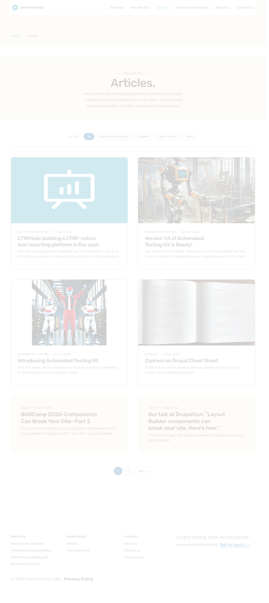
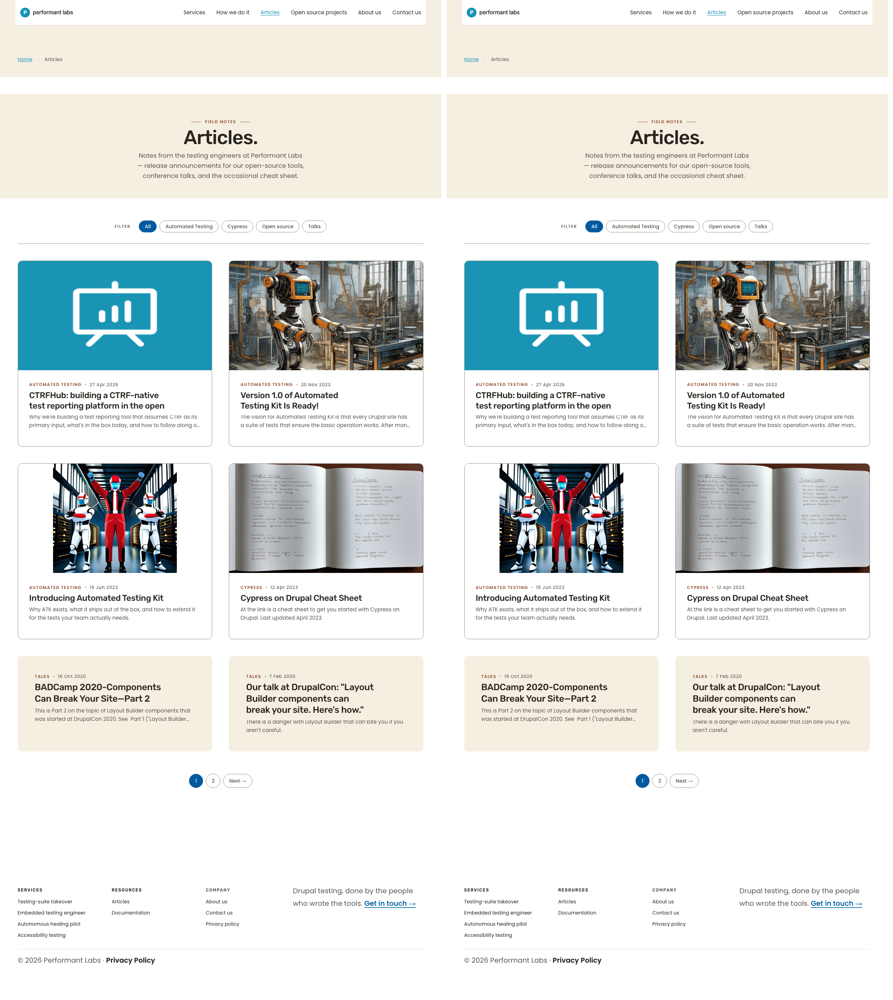
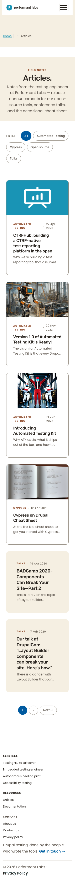
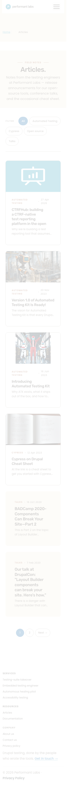
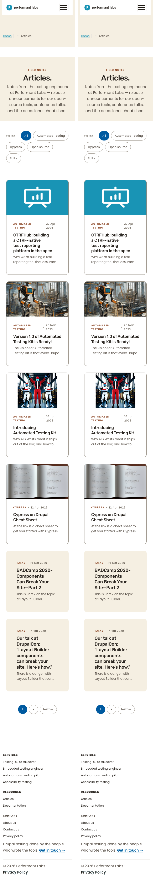

Page: /articles · Branch: aa/pl-sprint-4-phase-5-a11y-polish · Date: 2026-05-11
Cycle 5's only code change is a DOM move of <section class="page-title"> from outside <main> to inside <main> on /articles. Per-viewport pixel diff:
Zero visual regression. Heading hierarchy and Tab focus order are logical and unaffected by the parent-element change.
No visible differences detected at any viewport. The page-title cream band, "Field notes" kicker, "Articles." H1, lede paragraph, category filters, and article cards all render in identical positions before and after the cycle-5 change. The DOM-parent change (from sibling of <main> to first content child of <main>) has no CSS effect because .page-title is styled without reliance on its parent.
| Viewport | Pixels different (AE) | Whole-page % | Verdict |
|---|---|---|---|
| 1280 × 800 | 0 | 0.0000% | MATCH |
| 375 × 667 | 0 | 0.0000% | MATCH |
768 viewport was not captured — Cycle 5 introduces no responsive overrides and the change is template-structural only; with 0-pixel deltas at both desktop and mobile bookends, an intermediate breakpoint capture would not change the verdict.






/articles (1280, first 20 stops)| # | Element | In main? | Target |
|---|---|---|---|
| 1 | Skip to main content | — | #main-content |
| 2 | Logo link | — | / |
| 3–8 | Primary nav (Services, How we do it, Articles, Open source projects, About us, Contact us) | — | nav links |
| 9 | Breadcrumb "Home" link | — | / |
| 10–14 | Category filter pills (All / Automated Testing / Cypress / Open source / Talks) | main | filters |
| 15–20 | Article card titles (6 cards) | main | article URLs |
The page-title cream band sits between the skip-target anchor and the category filters. It contains static text only (kicker + H1 + lede), so it correctly produces no focus stops. Tab order reflects visual reading order.
/articles| Tag | Visually hidden? | In <main>? | Text |
|---|---|---|---|
| H2 | yes | — | Main navigation (nav landmark label) |
| H2 | yes | — | Breadcrumb (breadcrumb nav label) |
| H1 | no | yes | Articles. |
| H3 × 6 | no | yes | Article card titles |
| H2 | yes | — | Footer (nav landmark label) |
| H3 × 3 | no | — | Services / Resources / Company (footer) |
Single H1 inside <main>. Visually-hidden H2s correctly scope landmark labels. H2-to-H3 skip on article cards is pre-existing and out of scope for this cycle.
| Criterion | Status |
|---|---|
<section class="page-title"> renders inside <main> on /articles | PASS (DOM line 459 inside main 456–829) |
No visual regression on /articles from the DOM move | PASS (0 px delta at 1280 and 375) |
| Heading hierarchy clean | PASS (single H1, no new skips) |
| Keyboard focus order logical | PASS (skip-link → header nav → breadcrumb → main-content) |
Operator's spawn-prompt precondition override directs S to treat T's AC5 block as non-blocking: pa11y's four errors are pre-existing operator-approved brand-color deviations documented in base.css, not regressions introduced by Cycle 5. S did not re-run pa11y.